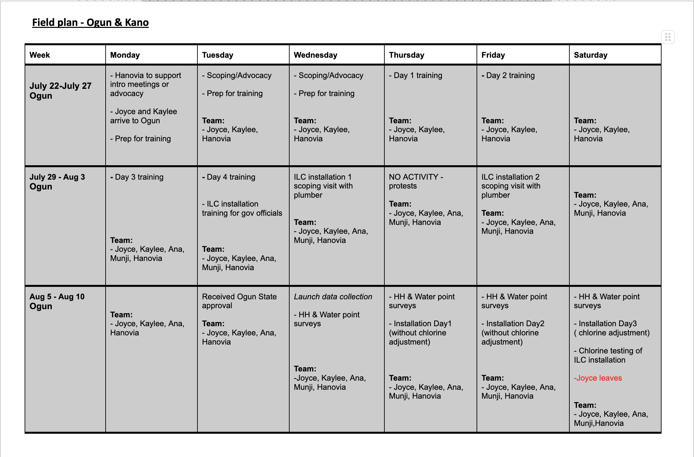

<div id="left"> <img src="img/DIL_logo_safespace_RGBFull Color.svg" alt="DIL logo" width="400"> </div> <h1>Survey Planning</h1>
## Session description - Why is it important to plan your survey ahead of time? - How can you plan your survey? - What are some best practices? - Where can I get help?
## Why is it important to plan your survey ahead of time?
## Why is it important to plan your survey ahead of time? <ul> <li class="fragment fade-in" style="text-align: left;"> Fidelity to research design</li> <li class="fragment fade-in" style="text-align: left;"> High quality data</li> <li class="fragment fade-in" style="text-align: left;"> Better relationships with collaborators</li> <li class="fragment fade-in" style="text-align: left;"> Less stress for you!</li> </ul>
## How can you plan your survey?
## How can you plan your survey? <ol> <li> <span style="font-weight: bold; color: #FBA320;"> Survey instrument </span> </li> <li> Field plan</li> <li> Training material</li> <li> Approvals</li> <li> Contracts</li> <li> Data management</li> </ol>
## 1. Survey instrument <ul> <li class="fragment fade-in" style="text-align: left;"> Always work with a paper version </li> <ul> <li class="fragment fade-in" style="text-align: left;"> Useful for iterating with PIs </li> <li class="fragment fade-in" style="text-align: left;"> Good for enumerator training </li> </ul> <li class="fragment fade-in" style="text-align: left;"> Pilot --> Make changes --> Pilot again --> Finalise </li> <ul> <li class="fragment fade-in" style="text-align: left;"> Budget for multiple iterations at the piloting stage </li> </ul> <li class="fragment fade-in" style="text-align: left;"> Once you have a decent version of the instrument, start coding into SurveyCTO </li> <li class="fragment fade-in" style="text-align: left;"> Bench-test the SurveyCTO instrument several times by different people (co-RPs, enumerators) </li> <li class="fragment fade-in" style="text-align: left;"> Plan ahead and make sure you allow for enough time for translation (if needed) </li> </ul>
## How can you plan your survey? <ol> <li> Survey instrument </li> <li> <span style="font-weight: bold; color: #FBA320;"> Field plan </span> </li> <li> Training material </li> <li> Approvals</li> <li> Contracts</li> <li> Data management</li> </ol>
## 2. Field plan <ul> <li class="fragment fade-in" style="text-align: left;"> Make sure you have a field plan at least one month before training </li> <li class="fragment fade-in" style="text-align: left;"> A good field plan should: </li> <ul> <li class="fragment fade-in" style="text-align: left;"> List all activities to be covered (eg, baseline followed by rollout of intervention) </li> <li class="fragment fade-in" style="text-align: left;"> Have a clear timeline (eg intervention MUST be implemented within 2 weeks of baseline) </li> <li class="fragment fade-in" style="text-align: left;"> Account for travel time, holidays </li> <li class="fragment fade-in" style="text-align: left;"> Budget for potential delays </li> <li class="fragment fade-in" style="text-align: left;"> Be realistic </li> </ul> </ul>
## 2. Field plan
## How can you plan your survey? <ol> <li> Survey instrument </li> <li> Field plan</li> <li> <span style="font-weight: bold; color: #FBA320;"> Training material </span> </li> <li> Approvals</li> <li> Contracts</li> <li> Data management</li> </ol>
## 3. Training material <ul> <li class="fragment fade-in" style="text-align: left;"> Ideal to have presentations or notes that you will use during training, AND a training manual or handbook that you will give to your enumeration team. The handbook should contain: </li> <ul> <li class="fragment fade-in" style="text-align: left;"> Any and all protocols that the team will need to follow. Eg how to sample households, who the respondent is, any selection criteria (only pregnant women, only landholding farmers) </li> <li class="fragment fade-in" style="text-align: left;"> Team structure as well as roles and responsibilities </li> <li class="fragment fade-in" style="text-align: left;"> Daily plan </li> <li class="fragment fade-in" style="text-align: left;"> Detailed notes about each module in the questionnaire </li> </ul> </ul>
## 3. Training material -- Team structure
## 3. Training material -- Roles and responsibilities
## 3. Training material -- Weekly plan 
## 3. Training material -- Daily plan
## How can you plan your survey? <ol> <li> Survey instrument </li> <li> Field plan</li> <li> Training material </span> </li> <li> <span style="font-weight: bold; color: #FBA320;"> Approvals </span> </li> <li> Contracts</li> <li> Data management</li> </ol>
## 4. Approvals <ul> <li class="fragment fade-in" style="text-align: left;"> Research approvals </li> <ul> <li class="fragment fade-in" style="text-align: left;"> UChicago IRB </li> <ul> <li class="fragment fade-in" style="text-align: left;"> Budget for at least 2 months for the first review, ~3 weeks for amendments </li> </ul> <li class="fragment fade-in" style="text-align: left;"> Local in-country IRB </li> <li class="fragment fade-in" style="text-align: left;"> Collaborating universities’ IRBs </li> </ul> <li class="fragment fade-in" style="text-align: left;"> Permissions </li> <ul> <li class="fragment fade-in" style="text-align: left;"> Government permission </li> <ul> <li class="fragment fade-in" style="text-align: left;"> Sometimes might require permissions at multiple levels (national, county, village) </li> </ul> <li class="fragment fade-in" style="text-align: left;"> Partner organizations’ permission </li> </ul> </ul> </ul>
## How can you plan your survey? <ol> <li> Survey instrument </li> <li> Field plan</li> <li> Training material </span> </li> <li> Approvals </li> <li> <span style="font-weight: bold; color: #FBA320;"> Contracts </span> </li> <li> Data management</li> </ol>
## 5. Contracts <ul> <li class="fragment fade-in" style="text-align: left;"> We rely heavily on collaborators while on the field. It’s important that our contracts to collaborators are finalised well in advance so that it does not disrupt field activities </li> <li class="fragment fade-in" style="text-align: left;"> Budget sufficient time (~4-6 weeks minimum) to finalise contracts </li> <li class="fragment fade-in" style="text-align: left;"> Examples of contracts that are important during fieldwork: </li> <ul> <li class="fragment fade-in" style="text-align: left;"> Survey company </li> <li class="fragment fade-in" style="text-align: left;"> Local research organisation </li> <li class="fragment fade-in" style="text-align: left;"> Consultants </li> <li class="fragment fade-in" style="text-align: left;"> Transport vendors </li> <li class="fragment fade-in" style="text-align: left;"> Equipment purchases </li> </ul> </ul>
## How can you plan your survey? <ol> <li> Survey instrument </li> <li> Field plan</li> <li> Training material </span> </li> <li> Approvals </li> <li> Contracts </li> <li> <span style="font-weight: bold; color: #FBA320;"> Data management </span> </li> </ol>
## 6. Data management <ul> <li class="fragment fade-in" style="text-align: left;"> Start thinking about data flow and data checks while designing the instrument </li> <li class="fragment fade-in" style="text-align: left;"> What checks should be coded in the HFCs? </li> <li class="fragment fade-in" style="text-align: left;"> Who should code the HFCs? </li> <li class="fragment fade-in" style="text-align: left;"> Who should run the HFCs daily? </li> <li class="fragment fade-in" style="text-align: left;"> How are errors communicated to the enumeration team? </li> <li class="fragment fade-in" style="text-align: left;"> How often? </li> <li class="fragment fade-in" style="text-align: left;"> Who is responsible for resolving errors? </li> <li class="fragment fade-in" style="text-align: left;"> How should each error be resolved and how often? </li> <li class="fragment fade-in" style="text-align: left;"> What stats do you want to see while the data is incoming? </li> </ul>
## 6. Data management -- HFCs
## 6. Data management -- Productivity dashboard
## 6. Data management -- Productivity dashboard <div class="row"> <div class="container"> <div class="col"> </div> <div class="col"> </div> </div>
## What are some best practices?
<h3>Best practices (1/2)</h3> <ul> <li class ="fragment fade-in" style="text-align: left;">Plan ahead of time!</li> <li class ="fragment fade-in" style="text-align: left; ">Make sure you have all approvals in place (CITI, IRBs, government permissions)</li> <li class ="fragment fade-in" style="text-align: left; ">Things at UChicago take time to process, so submit your requests with that in mind</li> <li class ="fragment fade-in" style="text-align: left; ">Create a thoughtful and realistic GANTT chart (use Asana)</li> </ul> </div>
<h3>Best practices (2/2)</h3> <ul> <li class ="fragment fade-in" style="text-align: left;">Create a comprehensive <a href="https://docs.google.com/document/d/1itmO1hejewpF3P9imtMQlJ5hoBeR5QBT/edit">Survey Plan</a> for the research team</li> <li class ="fragment fade-in" style="text-align: left; ">Create an enumerator handbook for the field team</li> <li class ="fragment fade-in" style="text-align: left; ">Create a paper version of all survey instruments</li> <li class ="fragment fade-in" style="text-align: left; ">Use dashboards to monitor data collection in real time</li> <li class ="fragment fade-in" style="text-align: left; ">Keep close communication with the field team and encourage them to share any issues with the instrument</li> </ul> </div>
## Where can I get help?
## Resources <p style="text-align: left;">Below you can find some resources and tools we think might be useful when creating a plan for your surveys:</p> 1. <span style="font-weight: bold; color: #FBA320;">[Survey Plan template](https://docs.google.com/document/d/1itmO1hejewpF3P9imtMQlJ5hoBeR5QBT/edit)</span> 2. <span style="font-weight: bold; color: #FBA320;">Asana</span> 3. <span style="font-weight: bold; color: #FBA320;">[Enumerator guideline](https://docs.google.com/document/d/13z68_Ab2Ho8l-v456RIn0YfAF5oUQFli/edit?usp=sharing&ouid=106782666884946357897&rtpof=true&sd=true)</span> 4. <span style="font-weight: bold; color: #FBA320;">[Paper survey](https://docs.google.com/document/d/1ZnGrXgcBRBwqHO_6g_CJs68uBmJSXhj2/edit?usp=sharing&ouid=106782666884946357897&rtpof=true&sd=true)</span> 5. <span style="font-weight: bold; color: #FBA320;">[World Bank DIME](https://dimewiki.worldbank.org/High_Frequency_Checks)</span> 6. <span style="font-weight: bold; color: #FBA320;">[Past DIL resources](https://drive.google.com/drive/folders/1tqKU5ioTaoxoDaR3XcgAZZPrLO9votCc)</span> 7. Ask around the office! :)
## Thank you!